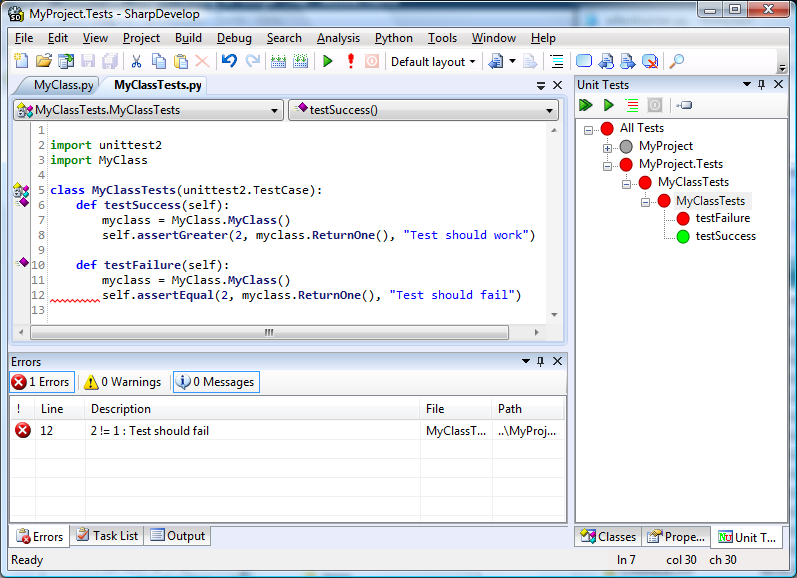

SharpDevelop 4 has been updated to support running IronPython unit tests that use the unittest2 library, as shown in the screenshot below.

Make sure unittest2 is on the Python path before running the unit tests.
Out of the box SharpDevelop will actually use the unittest library's test runner. This seems to work however if you actually need to use the unittest2 test runner then you can modify the following two files in the folder AddIns\AddIns\BackendBindings\PythonBinding\TestRunner.